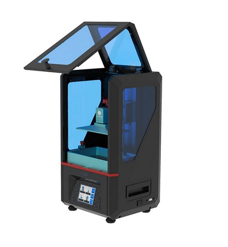

About
The Anycubic Photon is a good enough reason to get excited about resin printing. The Photon delivers more accurate detailed prints with less chances of warping or distortion. Despite using almost exactly the same technique as other DLP printers, the quality of carefully machined parts have given this 3D printer a competitive edge over almost every other affordable desktop model. This quality printer would make an excellent addition to any experienced maker's desk.
Specifications
| Specs | Value |
|---|---|
| Print area | 115 x 65 x 155 mm |
| System | Windows, Linux, Mac |
| Extruder | 25W UV Lamp/DLP Curing System |
| XY Resolution | 47microns |
| Y Axis Accuracy | 1.25 microns |
| Print speed | 20mm/h |
| Resin Support | 405nm Photosensitive Resin |
| Power Supply | 110 to 220V Auto-Switch - 50/60Hz |
| SD-Card Support | yes |